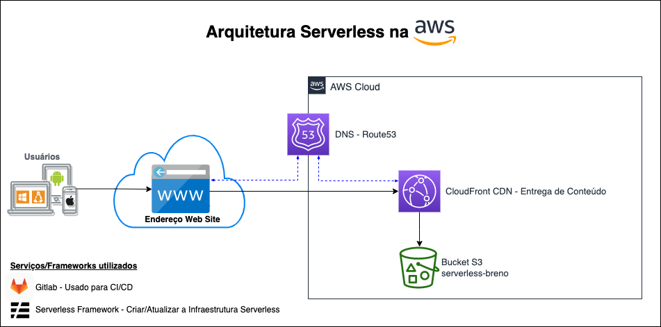

Aplicação Publicada
A imagem abaixo demonstra a infraestrutura, como funciona a aplicação e os serviços que foram utilizados.
Obs.: Inseri o Route53 na arquitetura, pois em um cenário com um domínio próprio (ex: brenocarvalho.cloud) ele seria necessário para criar o registro (CNAME ou A com Alias) de apontamento para o endereço do CloudFront.
Criado por: BrenoCarvalho.Cloud